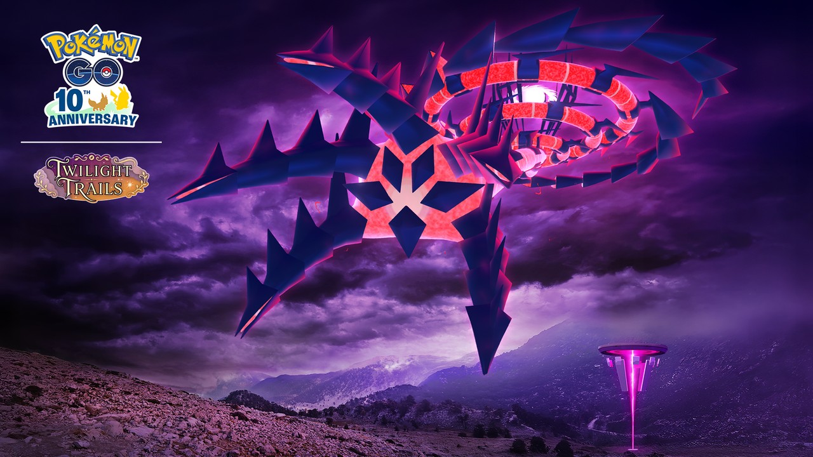
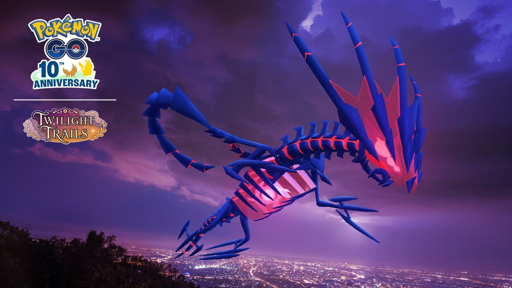

포켓몬고 무한다이노 맥스배틀 11월 21일 11시~14시 사탕 파밍 동선
11월 21일 토요일 점심 무렵, 동네 파워스폿이 한꺼번에 보랏빛으로 물든다는 소식을 보고 달력부터 열었는데요, 이날 11시부터 14시까지 딱 세 시간이 이번 커다란 발자국의 하이라이트예요. 아직 2~3주 남은 예정 일정이지만 사탕을 한 알이라도 더 챙기려면 동선을 미리 그려 두는 편이 좋아서, 제가 시간대별로 할 일만 추려 봤어요~
무한다이노 맥스배틀, 한 줄로 뭐가 핵심인가요
무한다이노 맥스배틀의 핵심은 11월 21일 11시~14시에 파워스폿에서 쓰러뜨려 무한다이노의 사탕과 사탕XL을 쓸어 담는 것이고, 이날은 잡을 기회가 아니라 사탕 파밍 시간이에요. 이번 이벤트 기간은 한국시간 11월 16일 10시부터 23일 20시까지로 예정돼 있어요.
- 11시~14시: 대다수 파워스폿이 무한다이노로 바뀌어 맥스배틀 가능
- 쓰러뜨려도 포획 기회는 없고, 사탕과 사탕XL을 다량 지급
- 이벤트 중 포획할 수 있는 무한다이노는 1마리
같은 날 14시부터는 자망칼 커뮤니티 데이가 이어지니까, 11시~14시를 맥스배틀에 몰아 쓰고 오후는 커뮤니티 데이로 넘어가는 하루를 추천드려요.
행사 주간 일정은 어떻게 흘러가나요
커다란 발자국은 11월 16일 10시에 시작해 11월 23일 20시에 끝나고, 무한다이노가 오는 날은 그 사이 21일(토) 하루예요. 날짜순으로 정리하면 이렇습니다.
| 한국시간 | 무슨 일 |
|---|---|
| 11/14(토) 10:00 | 와일드 위크 티어 1 리워드를 받은 분은 GO패스 조기 이용 |
| 11/16(월) 10:00 | 커다란 발자국 시작, GO패스 자동 지급 |
| 11/19(목) 18:00~19:00 | 스포트라이트 아워(포켓몬 포획 시 사탕 2배) |
| 11/21(토) 06:00 | 일일 리모트 레이드배틀 상한 30회 시작 |
| 11/21(토) 11:00~14:00 | 무한다이노가 대다수 파워스폿 점령 |
| 11/22(일) 11:00 | 리모트 레이드배틀 30회 종료 |
| 11/23(월) 20:00 | 커다란 발자국 종료 |
| 11/25(수) 20:00 | GO패스 리워드 수령 마감 |
리모트 레이드배틀 상한이 21일 06시부터 22일 11시까지 하루 10회에서 30회로 늘어나는 점은 눈여겨볼 만해요. 이벤트는 23일 20시에 끝나지만 GO패스 리워드는 이틀 더 받을 수 있답니다.
11월 21일 11시~14시에 뭘 하나요
11시~14시에는 가까운 파워스폿을 찾아 맥스배틀을 반복하는 게 전부예요. 파워스폿 추가 등장은 커다란 발자국 주간(11월 16일~23일) 내내 적용되고, 공식 무한다이노 귀환 안내에는 아래 내용이 이벤트 보너스로 적혀 있어요. 보너스 시간대가 따로 적혀 있지는 않지만, 11시~14시 점령 때 확실히 챙길 수 있게 이 시간에 맞춰 움직이면 무난해요.
- 파워스폿 갱신 간격 단축
- 맥스 파티클 수집 상한 2,400개로 증가
- 파워스폿에서 받는 맥스 파티클 8배

하늘을 덮은 무한다이노와 우하단의 파워스폿 — 11시에는 이런 그림이 동네에 깔릴 예정이에요
이미지 출처: 포켓몬GO 공식 뉴스 · LeekDuck
동선은 단순하게 잡으면 돼요. 11시 직전에 파워스폿이 많은 길목으로 이동해 두고, 한 곳을 끝내면 갱신된 다음 스폿으로 옮기는 식이에요. 맥스 파티클은 8배로 들어오지만 상한이 2,400개라서 가득 차기 전에 소진하는 쪽으로 돌리는 편이 좋겠죠.
동네 사정에 따라 이렇게 나눠 보세요
· 파워스폿이 많은 동네: 길목에서 대기하다 갱신되는 대로 연달아 도전해요. 갱신 간격이 짧아지는 보너스 덕분에 기다리는 시간이 그만큼 줄어들어요.
· 파워스폿이 드문 동네: 상한이 30회로 늘어나는 21일 06시~22일 11시 리모트 레이드배틀을 함께 돌려요. 걷는 거리가 짧은 만큼 횟수로 메우는 쪽이 현실적이에요. 다만 이번 공지는 리모트 레이드배틀 상한이 30회로 늘어난다는 내용까지만이고, 무한다이노 맥스배틀을 원격으로 할 수 있는지는 따로 적혀 있지 않아요.
· 14시 이후 일정이 있는 날: 11시~14시는 맥스배틀, 14시부터는 커뮤니티 데이로 갈라요. 두 이벤트가 시간대만 달라서 하루에 몰아 챙기기 좋거든요.
참고로 공식 안내대로 무한다이노는 독·드래곤 타입이라, 타입 상성표 기준으로 얼음·드래곤·에스퍼·땅이 약점이에요. 이번 회차의 세부 수치와 카운터는 아직 공개 전이에요.
무한다이노의 사탕은 어떻게 모으나요
무한다이노의 사탕은 맥스배틀 승리 보상, GO패스 랭크 리워드, 랭크 55 추가 보너스, 이벤트 테마 필드리서치 이 네 갈래로 모여요. 사탕을 다량으로 주는 건 21일 맥스배틀 쪽이에요. 한눈에 나누면 이래요.
- 맥스배틀 승리: 무한다이노의 사탕과 사탕XL 다량(11월 21일 11시~14시)
- GO패스 랭크 리워드: 무료·디럭스 모두 사탕과 사탕XL, 디럭스는 추가 지급
- 랭크 55(티어 3) 보너스: 맥스배틀에서 사탕과 사탕XL 추가 획득
- 이벤트 테마 필드리서치: 별의모래·무한다이노의 사탕 등 보상
11월 19일 18~19시엔 포켓몬을 잡을 때 받는 사탕이 2배인데, 무한다이노는 야생에서 잡는 포켓몬이 아니라서 무한다이노의 사탕에도 적용되는지는 공지에 나와 있지 않아요. 랭크 15는 포획 별의모래 2배, 랭크 35는 필드 효과 다이맥스포에 드는 사탕·별의모래가 1/2로 줄어드는 보너스라서, 사탕만 보면 21일 전에 랭크 55까지 올려 두면 맥스배틀에서 사탕이 추가로 붙어 유리해요.
GO패스 디럭스, 살까요 말까요
무한다이노의 사탕을 최대한 모으고 싶다면 디럭스가 유리하고, 한 마리 만나고 가볍게 즐길 거라면 무료 패스만으로도 충분해요. 공식 안내의 리워드를 나란히 놓으면 차이는 이 정도예요.
| 구분 | 무료 GO패스 | GO패스 디럭스 |
|---|---|---|
| 무한다이노 | 무한다이노와의 만남(이미 잡았다면 사탕 100개) | 무료 쪽 그대로 |
| 무한다이노의 사탕 | 사탕·사탕XL | 사탕·사탕XL 추가 |
| 만남 | 이벤트 테마 다이맥스 포켓몬 | 다양한 이벤트 테마 포켓몬 추가 |
| 기타 | 이상한사탕·별의모래·스티커 | 은 파인열매·이상한사탕XL·스티커 |

커다란 발자국 공식 아트예요. 리워드 화면이 아니라 분위기 컷이에요
이미지 출처: 포켓몬GO 공식 뉴스 · LeekDuck
디럭스는 4.99달러(또는 같은 가치의 현지 통화)이고 구매 가능 여부는 지역에 따라 달라요. 언제든 올릴 수 있으며, 업그레이드 시점까지 도달한 랭크 리워드도 이어서 받는다고 안내돼요. 와일드 위크 티어 1 리워드를 받았다면 디럭스로 무료 업그레이드되니 따로 고민하실 필요가 없고요. 리워드 수령은 11월 25일 20시까지라서, 살지 말지는 랭크가 얼마나 오를지 보고 21일 전에 정하시면 돼요.
자주 묻는 질문
Q. 이미 무한다이노가 있으면 GO패스에서 뭘 받나요?
무료 패스 리워드가 무한다이노 대신 무한다이노의 사탕 100개로 바뀌어요.
Q. 11월 14일에 GO패스를 미리 쓸 수 있는 사람은 누구예요?
와일드 위크에서 티어 1 리워드를 받은 분이에요. 이 경우 GO패스 디럭스로도 무료 업그레이드되고, 나머지 분들은 16일 10시에 자동 지급돼요.
Q. 14시가 지나면 무한다이노는 끝인가요?
파워스폿 점령은 14시까지로 안내돼요. 그 뒤에는 GO패스 랭크 리워드의 무한다이노 만남과 사탕이 남아 있고, 리워드는 11월 25일 20시까지 받을 수 있어요.
정리하면 11월 21일 11시~14시는 맥스배틀로 사탕을 쓸어 담고, 14시부터는 커뮤니티 데이로 넘어가는 하루예요. 랭크는 21일 전에 올려 두시고, 즐거운 맥스배틀 되시길 바랄게요~
참고한 곳
· 포켓몬GO 공식 뉴스 — 커다란 발자국: 무한다이노
· 포켓몬GO 공식 — 맥스배틀 안내
✔ 포켓몬 GO 같이 보기 좋은 내용
· 포켓몬고 와일드 위크 리모트 레이드 30회, 11월 9일 자시안·11월 10일 자마젠타 에너지 챙기는 순서
· 포켓몬고 11월 GO패스 디럭스 가격과 보상 차이, 살까 말까
· 포켓몬고 자망칼 커뮤니티 데이 11월 21일 14시~17시, 절각참 대도각참 진화 도각참 배우는 조건